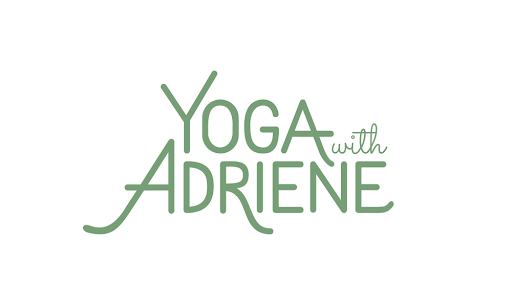

Yoga for Everyone
Find What Feels Good.
The People's Studio.
Join millions of people worldwide in a journey of self-discovery through yoga practices that are approachable, fun, and completely free.

What is Yoga With Adriene?
The World's Largest Online Yoga Community
Yoga With Adriene (YWA) is a mission-driven community led by Adriene Mishler. By providing high-quality yoga and mindfulness practices via YouTube, YWA makes yoga accessible to all bodies and budgets. Known for her "Find What Feels Good" philosophy and down-to-earth teaching style, Adriene helps practitioners build a deep, personal connection to their mental and physical health.
How To Use
Start Your Journey in 6 Simple Steps
Visit the YouTube Channel
Access over 600 free yoga videos on the YWA YouTube channel, searchable by need, time, or mood.
Pick Your Practice
Search specific themes like "Yoga for Back Pain" or "Yoga for Anxiety" to find a class tailored to your state.
Join a 30-Day Journey
Participate in the famous annual January 30-day series to build a consistent, daily wellness habit.
Focus on Your Breath
Listen to Adriene's cues on breathwork (Pranayama) to move with intention and honor your body's limits.
Engage with the Community
Join the global conversation in the comments—the YWA community is famous for being kind and supportive.
Explore FWFG Kula
Dive deeper with the "Find What Feels Good" membership app for exclusive content and offline viewing.
VIDEO TUTORIAL
Find What Feels Good
Capabilities
Core Features
Theme-Based Search
Extensive library tagged by emotion (lonely, vulnerable) and physical need (runners, office workers).
Monthly Calendars
Free monthly curated playlists that take the guesswork out of what practice to do each day.
Benji the Dog
The presence of Adriene’s dog Benji adds a unique, calming, and grounding element to the sessions.
FWFG App
Optional paid membership for those who want a distraction-free experience away from YouTube.
Evaluation
Pros & Cons
Pros
- Completely free to access on YouTube with no hidden fees.
- Incredibly welcoming for absolute beginners and non-athletes.
- Strong focus on mental health, anxiety relief, and self-love.
- Highly relatable and authentic teaching style.
Cons
- YouTube ads can interrupt the flow of a meditative session.
- Advanced practitioners may find the pace too slow.
- Lack of real-time instructor feedback for form correction.
- Searching via YouTube can sometimes feel disorganized.
Verdict
Final Review
Yoga With Adriene is the most accessible wellness resource on the internet. It successfully strips away the elitism often associated with yoga, making it a "come as you are" experience. While it may not offer the high-intensity sweat of Peloton, its ability to heal the mind and body through gentle, consistent practice is unmatched for the price of zero dollars.